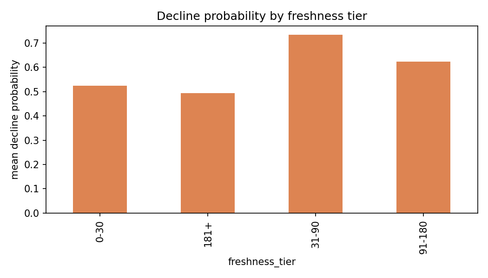
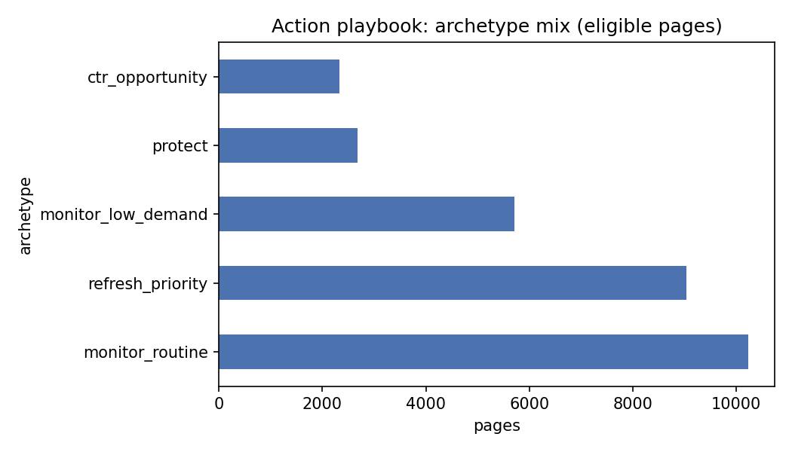

Abstract. With a limited editorial team and a growing content inventory, which pages deserve review first? This study builds a client-held-out model that ranks 30,000 pages by predicted decline risk, using only search and engagement signals available before any review decision is made. A Gradient Boosting model reaches Precision@50 of 0.76 against a transparent rule-based baseline's 0.62 — a 23% lift, on the same held-out clients and the same metric. The model leans more heavily on traffic volume and content age than on content-quality signals, a limitation this paper reports rather than hides. The result is a ranked, reason-coded action playbook, not a verdict on any single page.
A content team managing thousands of pages cannot manually check each one for decline, opportunity, or staleness every sprint. Some prioritization rule is always in use — usually an informal one, based on whichever pages someone happened to notice. This study asks a narrower, answerable question: given a page's trailing 90-day search and engagement signals, can a model rank pages by review priority more precisely than a simple, transparent rule — and if so, by how much, and with what caveats?
The unit of analysis is one content page. The decision this work supports is which pages an editor reviews first this cycle. The action is a manual review and, where warranted, a refresh. The cost of getting it wrong is asymmetric: a false positive wastes editor time on a page that wasn't really at risk, while a false negative lets a genuinely declining, high-demand page go unreviewed for another cycle. That asymmetry is why this study is built and evaluated around Precision@50 — how many of the top 50 ranked pages are actually worth the review — rather than plain accuracy.
This study uses the anonymized starter release from the FlyRank ML Internship dataset
(content_refresh_anonymized.csv): 30,000 pseudonymized content items across 32
pseudonymized clients, each described by 44 trailing-90-day search and engagement columns. Rows are
filtered to pages with impressions_90d > 0 and content_age_days >= 90 —
every row in this release already meets that bar.
Deliberately excluded:
Label. is_declining = trend_direction == "down" — a same-window
classification, not a verified future outcome. This proxy is used consistently and its limitation is
carried through every section below rather than argued away.
Baseline. A transparent rule: the gap between a page's CTR and its position tier's
volume-filtered average CTR, weighted by demand (log impressions), plus a small capped bonus for
pages stale 90–180 days. One reason code: ctr_underperform_vs_position.
Model. Gradient Boosting, selected after comparing Logistic Regression (AUC 0.528, barely above chance) and Random Forest (AUC 0.599) on identical features and splits — Gradient Boosting had the clearest edge (AUC 0.614). Ten features, all knowable before the decision point: trailing impressions, clicks, sessions, average position, CTR, content age, days since last update, word count, engagement rate, and scroll rate.
GroupShuffleSplit on
client ID), verified zero client overlap between train and test. This choice was not academic: the
same model under a plain random row split scored Precision@50 of 0.94, with 31 of 32 clients leaking
across train and test. The honest, client-held-out number is 0.76 — the gap is reported in full in
Limitations.
Leakage audit. An earlier trap (feeding the literal target-window value in as a "feature") pushed AUC from an honest 0.595 to a meaningless 1.000, demonstrating what leakage looks like before it was ruled out here. The final ten-feature set was re-audited: none is one of the fields the label is directly computed from, and no product flag was used as a feature.
| Method | Precision@50 | ROC AUC |
|---|---|---|
| Baseline — CTR-gap rule | 0.62 | 0.586 |
| Gradient Boosting model | 0.76 | 0.614 |
The model's top 50 ranked pages are 23% more precise than the baseline's, on clients the model never trained on.


Every eligible page is scored by the validated model and assigned to one archetype. This is decision-support for prioritizing review — not an automated action, and not a verdict on any individual page.
Model decline probability ≥ 0.6 and impressions ≥ 500. The clearest review candidates: real demand, real modeled risk.
CTR sits below half of its position tier's benchmark, with enough impressions for the gap to be real, not noise.
High modeled risk, but traffic too small for the risk score to be worth immediate editor time.
Top-tier position, low modeled decline risk. Distribute and leave alone — editing a stable strong page is a no-go, not an action.
No archetype match. No action needed this cycle — not a judgment that these pages don't matter.
monitor_routine; treating a reason code as a finished diagnosis
without checking the underlying numbers; using this to promise a refresh will recover traffic, or to make
any claim about Google's algorithm.
All seven weekly notebooks and the capstone notebook that mirrors this paper are committed to the repository below, executed with visible output.